Programming fundamentals
Practicing introductory C# concepts, calculations, and formatted outputs.
I’m Joshua C. Realiza, an Information Technology student at Northeastern College. I’m growing my practical knowledge through programming activities, IT training, and professional development seminars.
A student profile rooted in curiosity, hands-on learning, and real progress.
I am currently studying Bachelor of Science in Information Technology at Northeastern College. I enjoy learning how systems work, from the computer hardware inside a PC to programming logic and digital tools.
Through seminars, Cisco Networking Academy courses, Microsoft Learn activities, and DICT training, I continue to build the foundation for a future career in IT.
Practicing introductory C# concepts, calculations, and formatted outputs.
Learning hardware principles, computer maintenance concepts, and technical support.
Exploring networking fundamentals and simulations with Cisco Packet Tracer.
Guided programming projects demonstrating core skills.
Using arithmetic and basic C# logic to calculate and present a final grade-point average.
Working with student score data, basic calculations, and clear formatted output in C#.
Coursework, hands-on activities and seminar-based exposure.
Introductory console programs and guided computational activities.
Understanding components and technical system-servicing concepts.
Simulating connections and exploring network fundamentals.
Learning through DICT training and IT professional development seminars.
Education, technical training, and continuous development.
Ongoing academic learning in computing, programming, and IT technologies.
Listed technical qualification. A certificate scan and issuing date have not yet been provided.
Completed learning activities in agentic AI, C#, networking, hardware, IT management, digital productivity, and data privacy.
05 / CERTIFICATES, COURSES & BADGES
A collection of seminar participation, course-completion certificates, and the Computer Systems Servicing NC II qualification.
National Certificate II
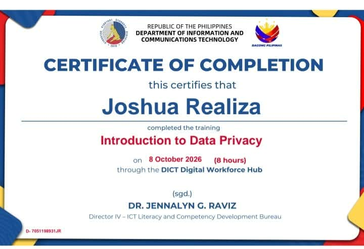
Department of Information and Communications Technology (DICT) · Digital Workforce Hub
Northeastern College · 10th IT Week
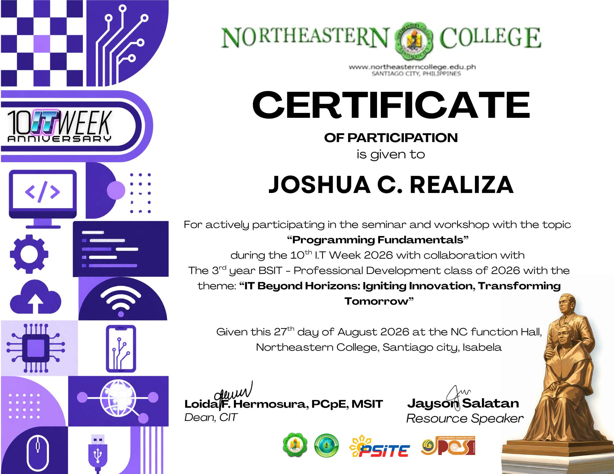
Northeastern College · 10th IT Week
Northeastern College · 10th IT Week
Northeastern College · 10th IT Week
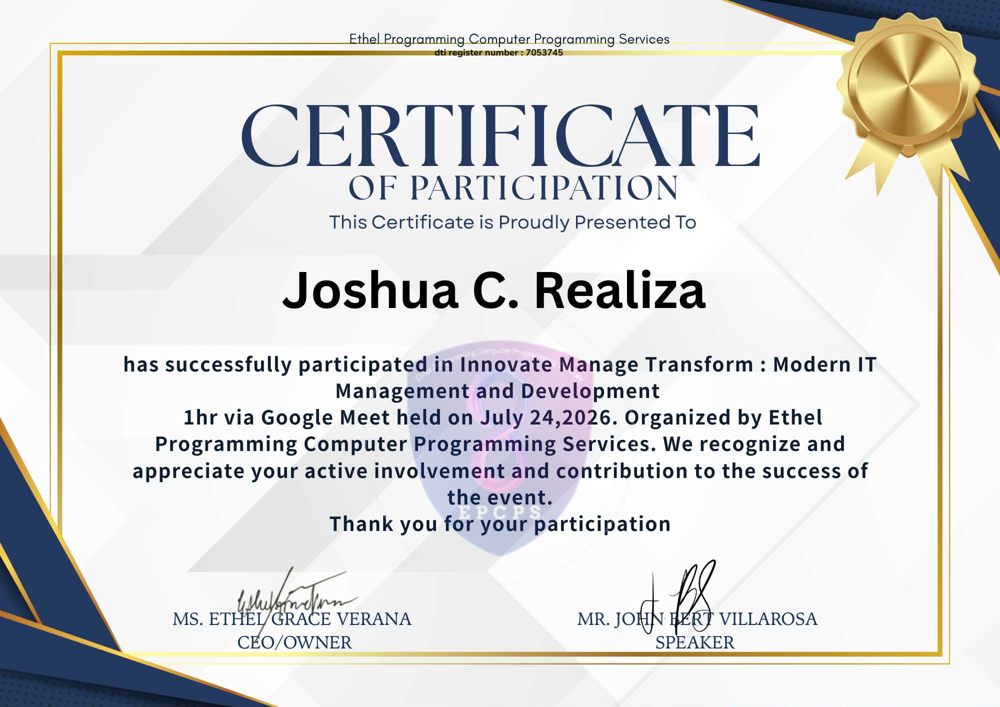
Ethel Programming Computer Programming Services
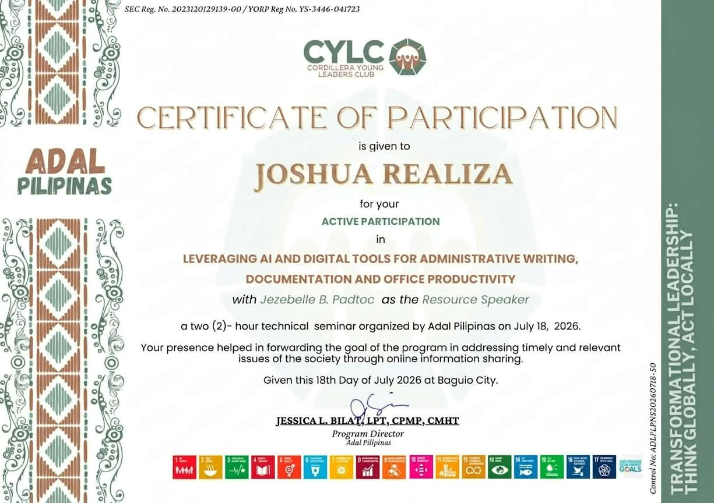
Adal Pilipinas / CYLC
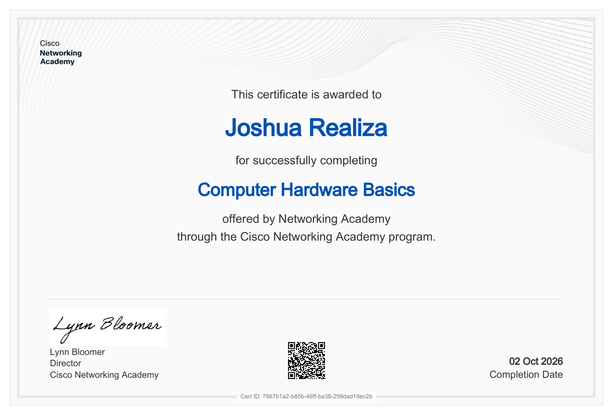
Cisco Networking Academy
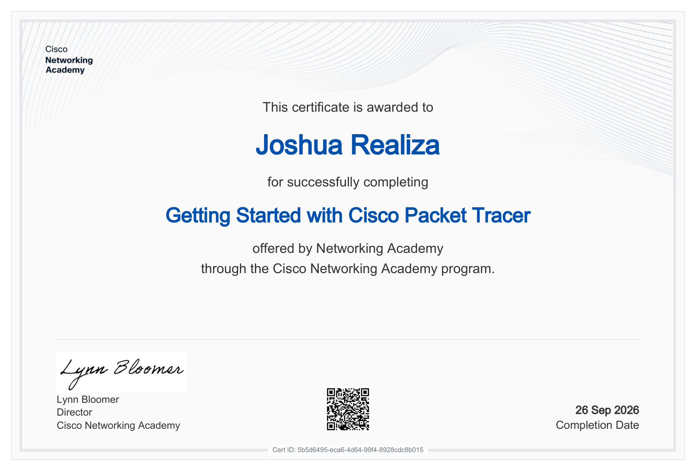
Cisco Networking Academy
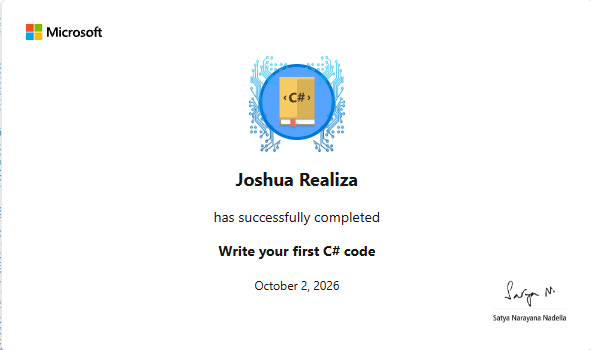
Microsoft
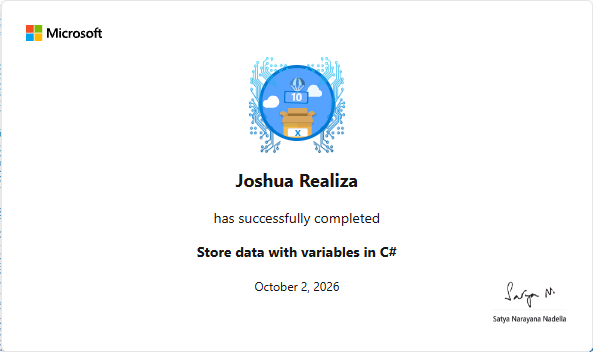
Microsoft
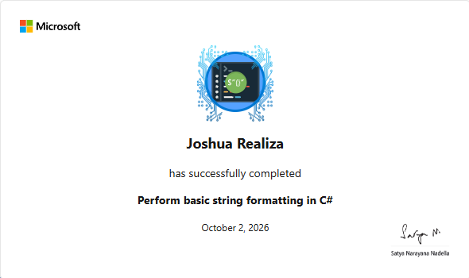
Microsoft
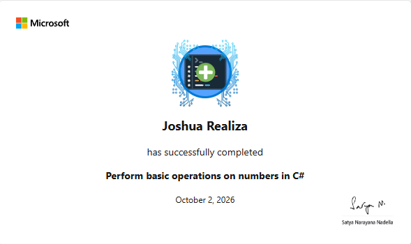
Microsoft
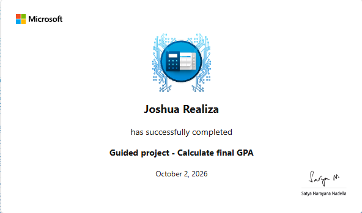
Microsoft
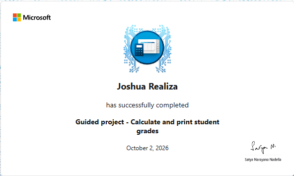
Microsoft
A record of topics and activities from professional development courses and workshops.
Attended technology-focused seminars on Agentic AI, Programming Fundamentals, IoT in capstones, and Video Editing Tips & Tricks.
Northeastern CollegeCompleted Cisco Networking Academy courses in computer hardware and Packet Tracer, alongside guided Microsoft C# learning exercises.
Cisco · MicrosoftCompleted the eight-hour “Introduction to Data Privacy” course through the DICT Digital Workforce Hub.
DICTThanks for exploring my portfolio. View my technical training records or download my resume to learn more about my background.